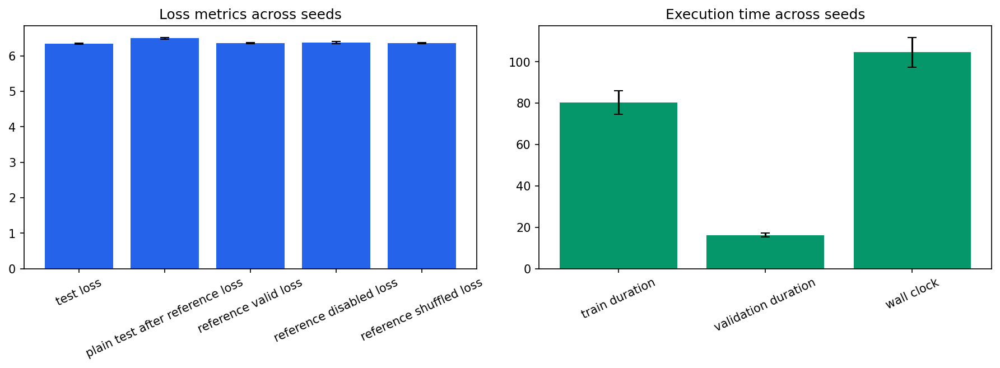

Seeds: [1, 7, 21, 42, 87]. Values are population mean +/- standard deviation.
| Test Loss | 6.34478 +/- 0.0182 |
|---|---|
| Test Perplexity | 569.609 +/- 10.3 |
| Plain Test After Reference Loss | 6.49476 +/- 0.0255 |
| Reference Valid Loss | 6.35572 +/- 0.0186 |
| Reference Disabled Loss | 6.37542 +/- 0.0254 |
| Reference Shuffled Loss | 6.35713 +/- 0.0184 |
| Train Duration Seconds | 80.3559 +/- 5.63 |
| Validation Duration Seconds | 16.2371 +/- 1.04 |
| Wall Clock Seconds | 104.616 +/- 7.16 |
| Processed Tokens | 78610.8 +/- 78.4 |
